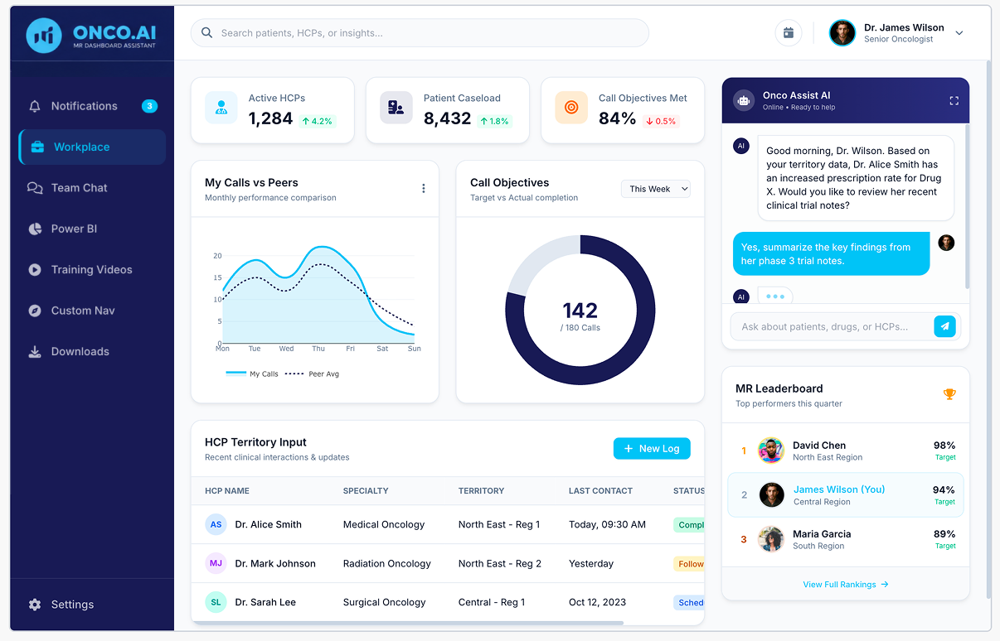
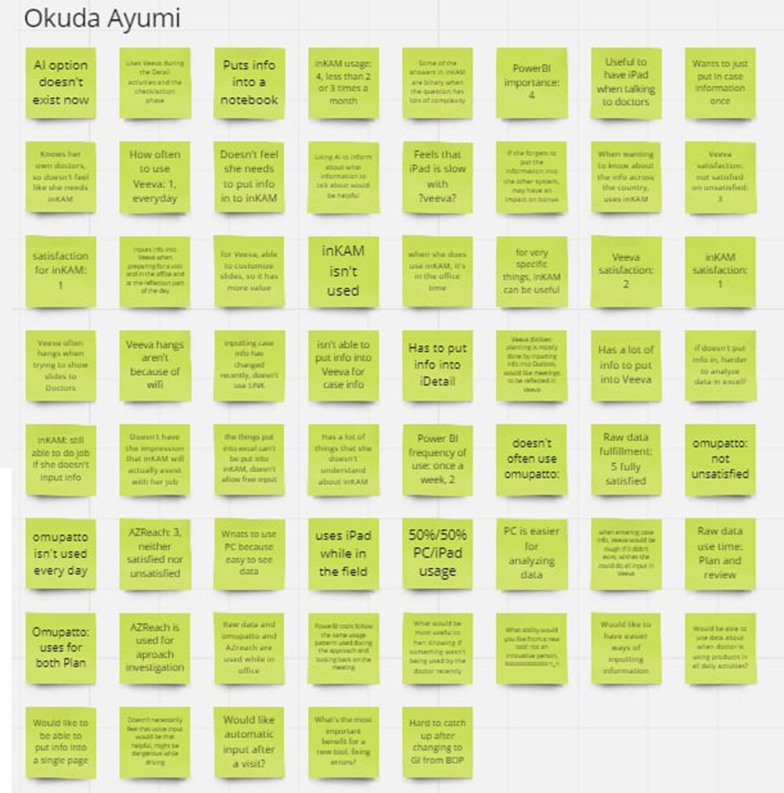
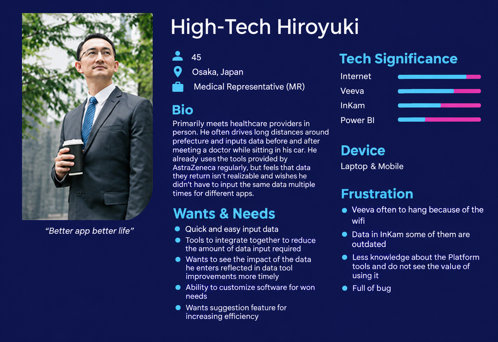
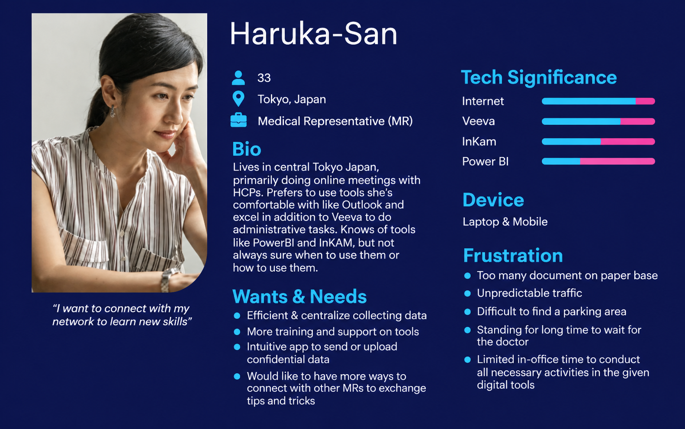
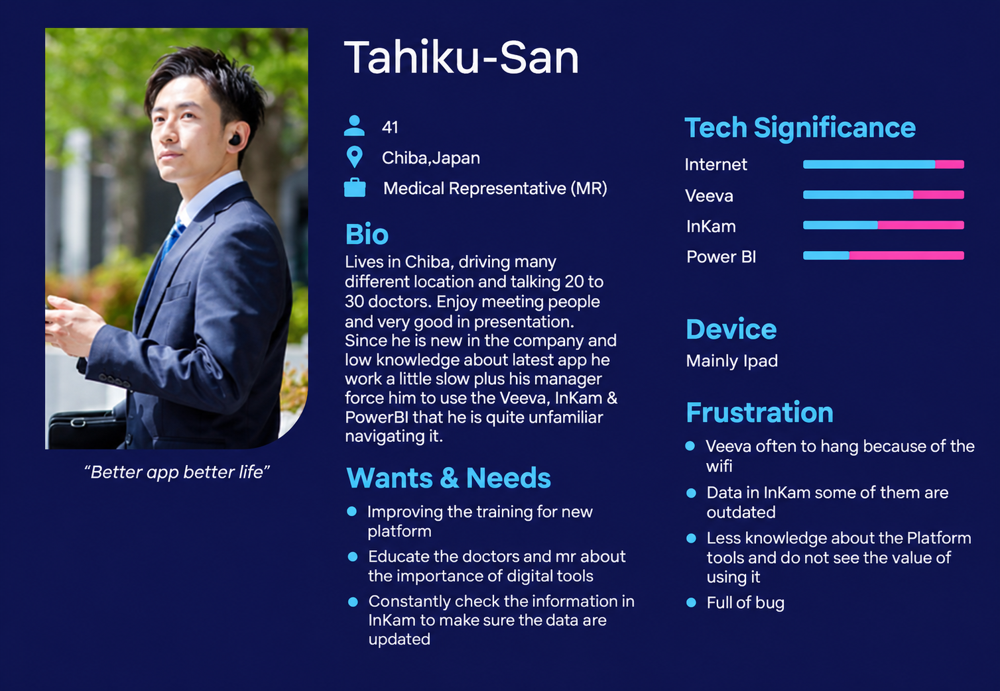
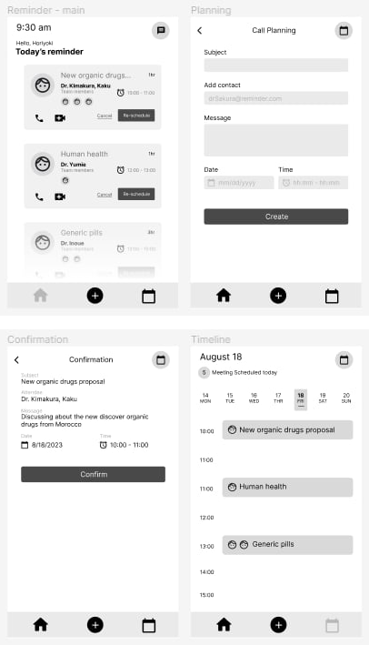
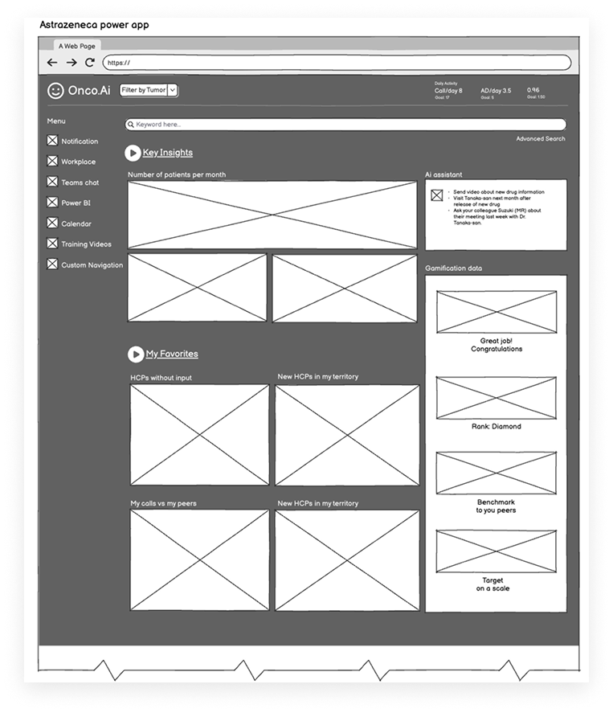
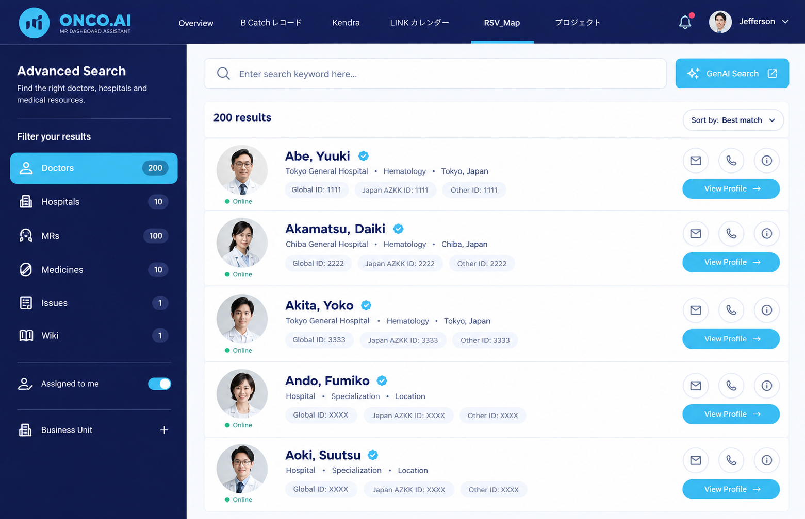
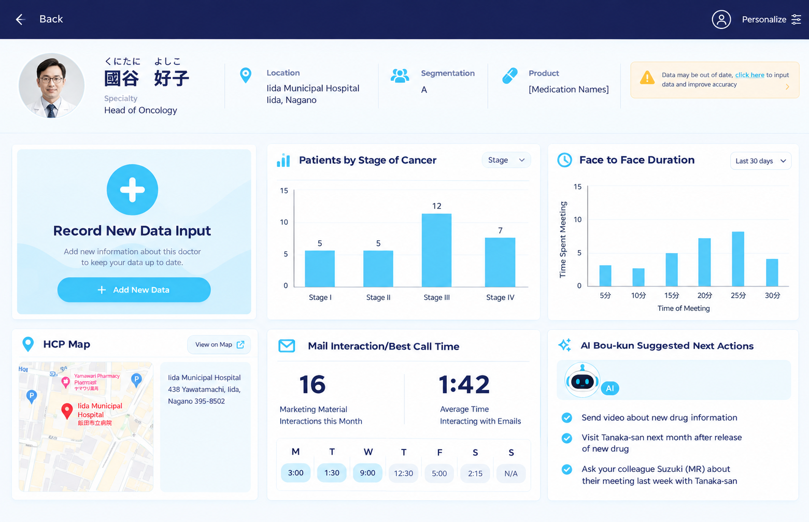
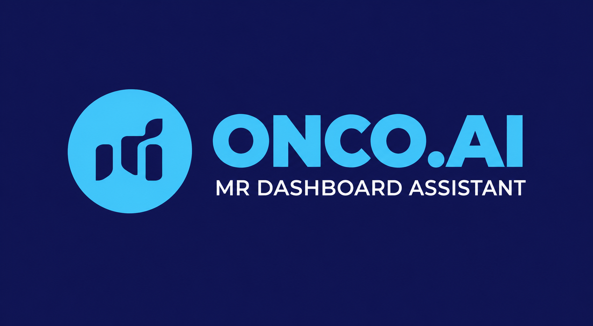

Replacing paper-based processes and a patchwork of disconnected apps with a single, AI-assisted workspace for healthcare field professionals, built on research with around 300 users.

The organization lacked a standardized platform and relied heavily on paper-based processes. The result was data loss, disorganization, and an inconvenient experience for the people doing the work.
An abundance of unaligned ideas across stakeholders.
Limited existing user research and no structured way to collect feedback.
Tight timelines, no dedicated UX resources, and dependency on outdated systems.
I defined and documented all proposed tasks with the team and set a clear timeline. Research came before any screens.
users interviewed in one month

From the interviews I analyzed daily routines and built journey maps and three personas representing the majority of users.

Persona 1
Persona 2
Persona 3Fourteen raw pain points reduced to six themes. Each one led to a design response.
| Theme | What users told me | Design response |
|---|---|---|
| Too many tools | Too many platforms, hard to navigate. The same data is entered in different platforms. | One single platform, with external third-party apps integrated |
| Time pressure | Limited in-office time. Long to-do lists, balanced against field visits. | Dashboard that surfaces today's priorities, and notifications |
| Data trust | Unsure whether data can be trusted. Some data is outdated. | Doctor data profile with clear, consolidated information |
| Findability | Hard to locate what's needed across systems. | Advanced search across the platform |
| Reliability | Veeva often hangs on weak wifi. Full of bugs. | One lighter, consistent entry point |
| Low adoption | Little knowledge of the tools, and no visible value in using them. | AI assistant, plus training videos inside the workflow |
Users also mentioned paper-heavy documents, unpredictable traffic to clinics, hard-to-find parking, and long waits to see doctors. Software can't remove traffic, but it can reduce paper and make waiting time more productive. These shaped the design for mobile-friendly, time-limited use.
The first proposal centered on an AI chatbot with notifications. In the review meeting, stakeholders did not align with the idea of an AI operator platform.

I centralized multiple applications into one platform: AI assistant, advanced search, dashboards, workplace tools, Power BI, Teams chat, scheduling, gamification data, user inputs, notifications, and training videos.

Reduces tool-switching and duplicate data entry.
Power BI, Teams chat and scheduling inside the workspace.
Helps people get answers and complete tasks faster.
Keeps priorities visible during limited in-office hours.
One search across the data people used to hunt for.
A starting point built around the day's priorities.
Decision. One home that brings together priorities, updates and tools.

Decision. Find data without knowing which system holds it.

Decision. Consolidated, trustworthy information before a visit.

Minimal and modern, suited to enterprise medical SaaS.
Royal blue conveys trust, confidence, and professionalism, which is essential in healthcare. The dark blue brings reliability and stability, signaling long-term commitment to patient care and data integrity.
Clean geometric sans-serif that stays legible in dense dashboards.
Replace these specimens with the real components from your Figma library.
The process ended with usability testing, validation of results, and user requirements sign-off. Only show what you can verify.
Usability testing on prototypes, then sign-off on the user requirements definition.
Tasks tested · 322 of users
On going:
N/A task completion·
N/A time on task·
N/A fewer errors
Stakeholders aligned on the unified-platform direction after the first AI concept was rejected.
Reframing matters as much as designing. The AI concept failed as the headline but worked as a capability, because I tied it to problems stakeholders already felt.
With limited resources and no dedicated UX team, structured research and a clear plan did more for alignment than polished mockups.
Have a product challenge you'd like to discuss? I'd be happy to connect.
Email me LinkedIn Read the previous case study →